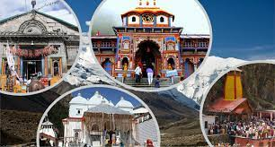
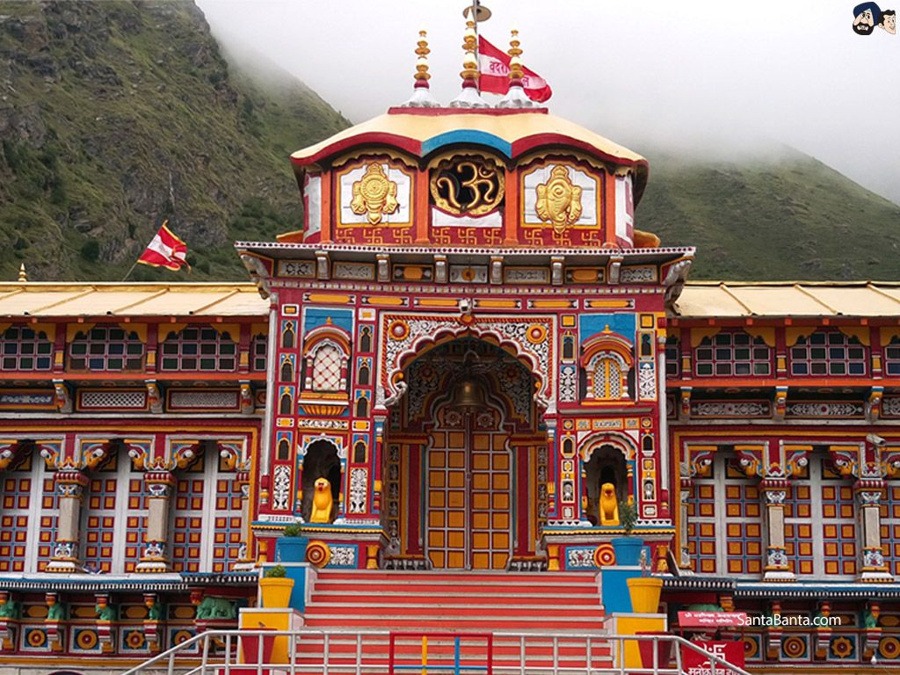

HOME | BADRINATH | KEDARNATH | YAMUNOTRI | GANGOTRI | IMAGES
 


Char Dham, literally ‘the four abodes’, yatra refers to the journey up the mountains to four sacred temples in the North Indian state of Uttarakhand. It is also referred to as 'Chhota Char Dham' to differentiate it from the bigger circuit of Char Dham sites. The four temples that comprise Char Dham are Yamunotri Dham, Gangotri Dham, Badrinath Dham and Kedarnath Dham. Yamunotri Dham, named after the Goddess Yamuna, is the first Dham en route the yatra. A bath in the holy waters of Yamuna river is said to cleanse one of all sins and protect from untimely death. Gangotri Dham, the second temple that falls on the Chota Char Dham circuit, is the birthplace of the holy river Ganga. Kedarnath, known as the land of Lord Shiva, has the highest located jyotirling. Situated on the banks of Mandakini River, the view of this temple against its snowy backdrop is resplendent. Badrinath, named after Lord Badri(Vishnu), is located along the banks of Alaknanda River. Also part of the bigger Char Dham circuit, it stands beautifully on Garhwal Hill, rearing its golden head and fluttering its red flags with Godly presence.